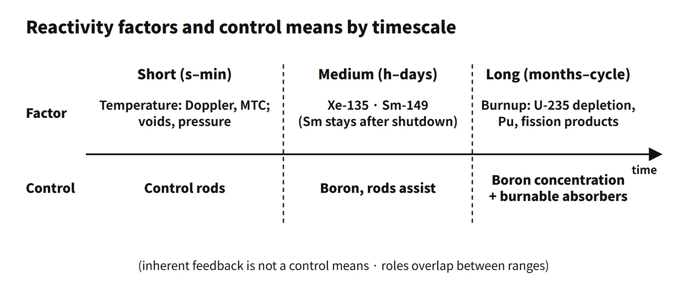

Reactor Physics & Kinetics · C-RX-009
Reactivity Control and Timescales — Short-, Medium- and Long-Term Reactivity Changes and How Control Rods, Boron and Burnable Absorbers Share Them
The reactivity balance by timescale: feedback in seconds, poisons over hours to days, burnup over the cycle, and the control means whose response speed matches each.
Classifying reactivity control by timescale means dividing the factors that change reactivity during operation by how fast they act — short term (seconds to minutes: temperature and density feedback), medium term (hours to days: ¹³⁵Xe and ¹⁴⁹Sm poisons) and long term (months to the whole cycle: burnup) — and offsetting them in a pressurized water reactor with control means of matching speed: control rods (short term), soluble boron (medium and long term) and burnable absorbers (long term).
A good first line for an answer: "a PWR reactivity-management scheme that sorts the factors changing reactivity by timescale and assigns each to a control means whose response speed matches it."
Principle and mechanism
The reactivity balance
During critical operation the reactivity terms sum to zero:
ρexcess (fuel loaded) − ρfeedback (temperature, power) − ρpoison (Xe, Sm) − ρburnup loss − ρcontrol (control rods + boron + burnable absorbers) = 0
The terms on the left change at very different rates. So rather than offsetting all of them with a single means, each change is assigned to a means with a matching speed.
Short-term factors (seconds to minutes): reactivity feedback
- Fuel temperature (Doppler): when power rises, fuel temperature rises within seconds and U-238 resonance absorption increases. This is the fastest negative feedback.
- Moderator temperature and density: when the coolant temperature rises, its density falls and moderation weakens. This acts over tens of seconds to minutes. The MTC of a light-water reactor is negative in the power-operating range; at beginning of cycle with high boron it can be near zero or positive.
- Voids and pressure: void formation or a pressure drop changes the density and therefore the reactivity.
In a large PWR the power defect from zero to full power is about −1,000 to −2,500 pcm (illustrative; varies by reactor type and cycle).
Medium-term factors (hours to days): fission-product poisons
- ¹³⁵Xe: produced by the decay of I-135 (T½ 6.7 h). It takes about 40–50 hours to reach full-power equilibrium, and the equilibrium value is about −2,500 to −3,000 pcm (illustrative). It peaks about 10 hours after shutdown, and power changes cause transients lasting several hours.
- ¹⁴⁹Sm: a stable nuclide produced by the decay of Pm-149 (T½ 53 h). It reaches equilibrium over several weeks, and the equilibrium value is a few hundred pcm regardless of power (about −440 pcm in the textbook one-group model). After shutdown it rises and stays.
Long-term factors (months to the whole cycle): burnup
- U-235 is consumed, and Pu-239 builds up and makes up part of the loss.
- Non-saturating fission products accumulate.
- Burnable absorbers burn out and release positive reactivity.
These changes proceed almost monotonically over the whole operating cycle (about 18 months in South Korea). A beginning-of-cycle hot-full-power critical boron concentration in the 1,000 ppm range means that roughly 10,000 pcm of reactivity will be lost to burnup (illustrative).
![Bars on a logarithmic time axis from 1 second to over a year: fuel temperature (Doppler) and moderator temperature acting in seconds to minutes with a power defect of 1,000 to 2,500 pcm, xenon-135 over hours to about two days with 2,500 to 3,000 pcm, samarium-149 over days to weeks with a few hundred pcm, and burnup over the cycle with about 10,000 pcm; below, control rods act in seconds to an hour, soluble boron from about half an hour to the cycle, and burnable absorbers from beginning of cycle; a photo of a control rod assembly, a gadolinia fuel rod and boric acid, and an APR1400 card with 241 fuel assemblies and 93 CEAs (81 full, 12 part strength)](../../assets/images/concepts/c-rx-009-reactivity-control-timescales/fig1-reactivity-timescale-map.webp)
Three control means and how they are paired
| Means | Response speed | Changes it handles |
|---|---|---|
| Control rods | Drop in seconds, drive in minutes | Reactor trip, power adjustment, short-term transients, axial power distribution |
| Soluble boron | Minutes to hours (limited by dilution and boration rates) | Xenon and samarium, burnup, cooldown and heat-up, cold shutdown margin |
| Burnable absorbers | Loaded at the design stage, consumed automatically by burnup | Part of the beginning-of-cycle excess reactivity, lower boron concentration |
- Boron: it spreads uniformly through the core and does not distort the power distribution, so it suits slow, large changes. At high concentration, however, the MTC can become positive.
- Burnable absorbers: they take on part of the large beginning-of-cycle excess reactivity, lowering the maximum boron concentration and keeping the MTC negative.
- Inherent feedback: Doppler and MTC are not "means" operated by the operator. They are design characteristics that suppress a power rise by themselves, and they are the first line of defense against short-term changes.
What it means in a plant
The APR1400 example
- Core: 241 fuel assemblies and 93 control element assemblies (CEAs), split into 81 full-strength and 12 part-strength CEAs.
- CEA groups: shutdown groups are fully withdrawn during power operation to provide the shutdown margin; regulating groups adjust power and temperature within the insertion limits.
- Boron: the concentration is changed through charging and letdown by the CVCS.
- Burnable absorbers: some fuel assemblies contain Gd₂O₃–UO₂ fuel rods (for example 12 or 16 per assembly).
Westinghouse plants use IFBA (ZrB₂ coating) and WABA. In a pressurized heavy-water reactor, on-power refueling handles long-term reactivity, the liquid zone controllers handle short-term changes and the adjuster rods handle xenon transients.
Handing over between means in operation
- Power reduction: the immediate reactivity change is taken by the control rods (regulating groups) and temperature feedback. The xenon build-up that follows is handed over to boron dilution over several hours, because keeping the rods deep in the core erodes the insertion-limit and axial power distribution margins.
- Cycle progress: boron is diluted to compensate burnup. When the dilution capacity runs out, the cycle is at its end.
- Shutdown and cooldown: dropping the rods makes the core subcritical at once. The positive reactivity added by the subsequent cooldown and by xenon decay is covered by boration to meet the cold shutdown margin.
Premature criticality (2009 exam, session 2, Q2)
This is reaching criticality at a rod position well before the estimated critical position (ECP) during startup. The cause is a factor of one of the timescales not being reflected correctly: the xenon or samarium state or the boron concentration was entered wrongly in the ECP calculation, 1/M monitoring was inadequate, boron dilution and rod withdrawal were done at the same time, or the procedure was not followed.
Countermeasures:
- If criticality occurs outside the ECP tolerance band (for example ±500 pcm, per plant procedure), stop the startup and evaluate the cause.
- Withdraw in steps while plotting 1/M, and limit the startup rate.
- Prohibit dilution during startup.
- Verify the ECP with an independent calculation.
Regulatory basis
- Korean technical standard rule for reactor facilities, Article 28 (reactivity control systems)
- (1) Control rods and liquid absorbers must reliably control reactivity changes in normal operation and anticipated operational occurrences. There must be two independent systems of different design principles, one of which must be control rods, and one of them must keep the reactor subcritical in the cold condition.
- (2) The control rod system must act promptly, and the specified acceptable fuel design limits (SAFDL) must be met even with one control rod stuck.
- (3) The second system (liquid absorber) must control the rate of reactivity change from planned power changes.
- Same rule, Article 18 (reactor inherent protection): across the full power range, prompt inherent feedback must compensate for a rapid increase in reactivity. This is the basis for short-term feedback.
- Same rule, Article 36 (control element drive mechanisms): they must move at a speed suited to the reactor characteristics and must not move in the reactivity-increasing direction when drive power is lost.
- Same rule, Articles 26 and 27: the protection system must keep the SAFDL even for a single malfunction such as an inadvertent rod withdrawal (Article 26); a diverse protection system covers ATWS (Article 27).
- 10 CFR 50 Appendix A: GDC 11 (inherent protection), GDC 26 (two independent reactivity control systems — the second controls planned power changes including xenon burnout), GDC 27 (combined capability with ECCS boron injection), GDC 28 (reactivity limits).
- IAEA SSR-2/1 (Rev. 1, 2016), Requirement 46: requires at least two diverse and independent means of shutdown.
- Operating technical specifications: monitor the shutdown margin, regulating-group insertion limits, MTC and boron concentration. Unit-specific values follow the COLR.
- Then and now: the principles and GDC 26 are unchanged, and the article numbering of the Korean rule has been kept since its 2001 revision. The criteria for reactivity accidents moved from RG 1.77 to RG 1.236 (2020).
Easily confused pairs
| Factors that change reactivity (cause) | Reactivity control means (response) | |
|---|---|---|
| Short term | Fuel temperature (Doppler), moderator temperature, voids, pressure | Control rods (with inherent feedback acting first) |
| Medium term | ¹³⁵Xe and ¹⁴⁹Sm poisons | Control rods → handed over to boron |
| Long term | U-235 depletion, Pu production, FP accumulation, burnable absorber depletion | Boron dilution, burnable absorbers (design), refueling |
| How it is asked | 2021 and 2026: "factors that change" reactivity | 2020: "factors of control"; 2002: "control means" |
Answering only with control means when the question asks for "factors" loses points. The safest answer pairs cause and response in a single table.
Key points at a glance
Model answer (10 points): short-, medium- and long-term factors that change reactor reactivity
- Definition: classify the factors that change reactivity by the timescale on which they act, and assign each to a control means of matching response speed.
- Short term (seconds to minutes): fuel temperature (Doppler), moderator temperature and density (MTC), voids and pressure → negative feedback acting immediately with a power change; power defect about 1,000–2,500 pcm (illustrative).
- Medium term (hours to days): ¹³⁵Xe (from I-135 decay, equilibrium in about 40–50 h, peak about 10 h after shutdown) and ¹⁴⁹Sm (stable nuclide, rises and stays after shutdown).
- Long term (months to cycle): burnup — U-235 depletion, Pu-239 production, FP accumulation, burnable absorber depletion.
- Control means: short term → control rods; medium and long term → soluble boron (dilution and boration); part of the long term → burnable absorbers (Gd₂O₃ etc.).
- Handover: control rods right after a power change → the xenon transient is handed to boron (insertion limits and ASI management).
- APR1400 example: 93 CEAs (81 full-strength, 12 part-strength), CVCS boron, Gd₂O₃–UO₂ absorber rods.
- Regulation: Korean technical standard rule Article 28 and GDC 26 — two independent reactivity control systems of different design principles (one of them control rods, one keeping the core subcritical cold); Article 18 inherent protection.

This is a model answer, not an official solution. It reflects the criteria current as of 2026.
Exam relevance
This topic has appeared six times in the Korean Professional Engineer (Nuclear Power) exam: 63rd exam (2001), session 3, Q6 (why boric acid is used for reactor control and its effects); 68th exam (2002), session 4, Q1 (reactivity control means and materials in a PWR); 2009 exam, session 2, Q2 (causes of a premature criticality event and design and operating countermeasures); 2020 exam, session 1, Q6 (short-, medium- and long-term factors of reactivity control); 2021 exam, session 1, Q11 (short-, medium- and long-term factors that change reactivity); and 2026 exam, session 2, Q5 (reactivity-changing factors of a PWR itself, short, medium and long term). Read the wording carefully: 2021 and 2026 ask for the factors that change reactivity (causes), while 2020 asks for the factors of reactivity control (causes and the means that respond). Writing the causes and the control means side by side covers both readings.